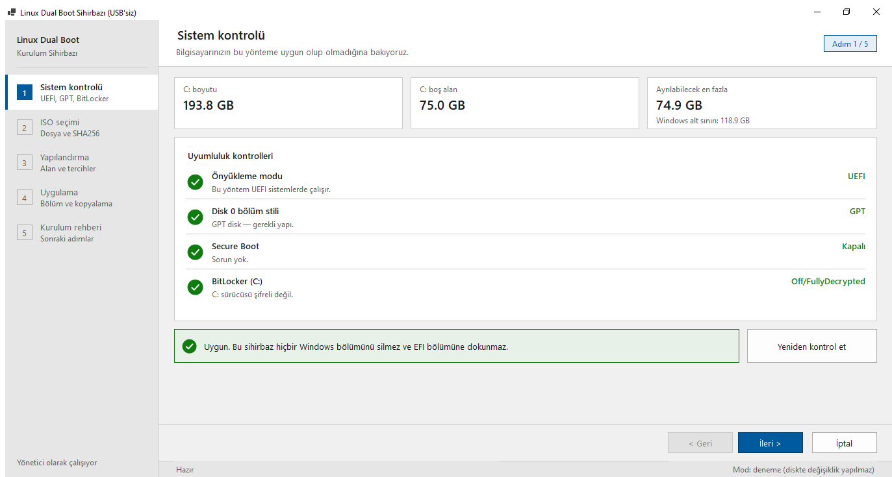
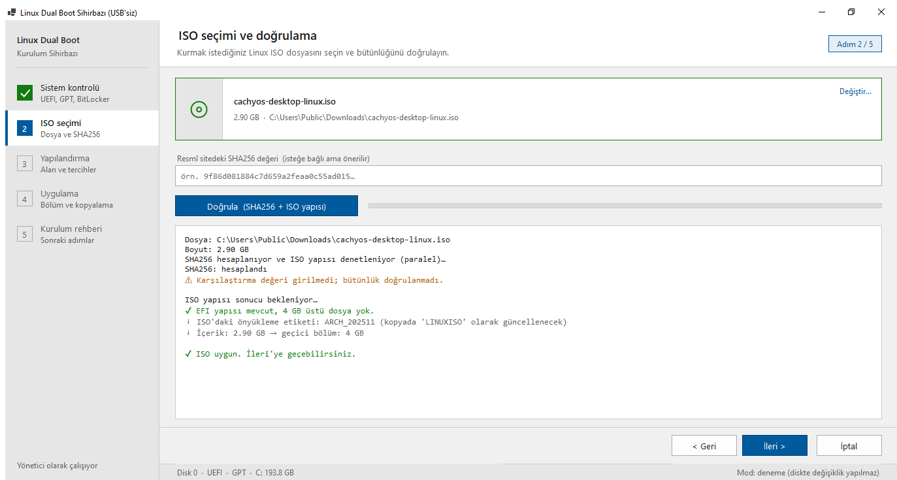
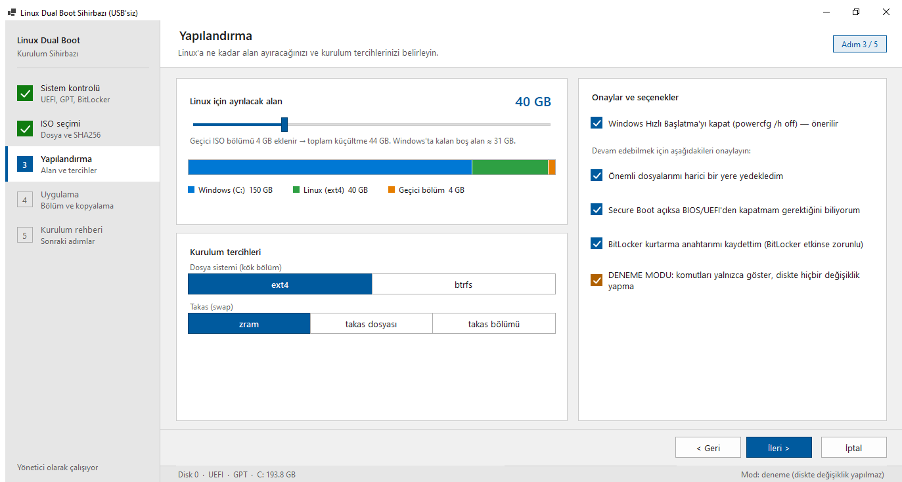
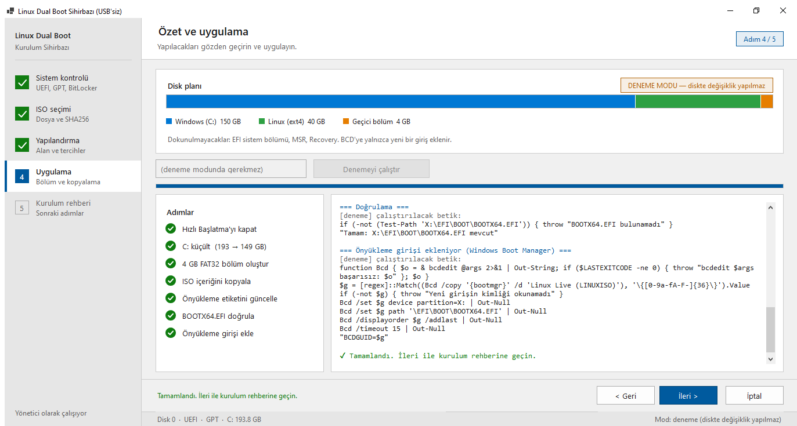
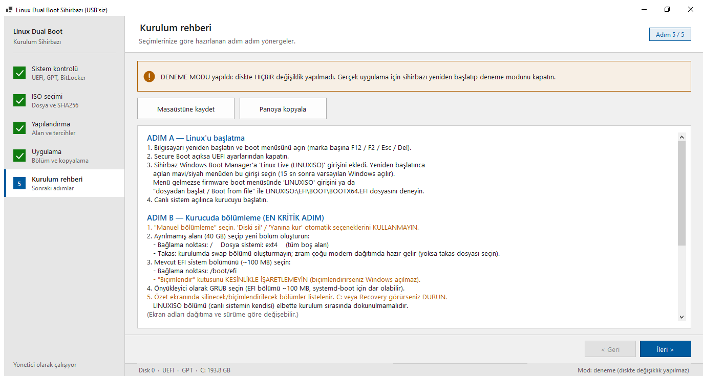

UEFI, GPT, Secure Boot ve BitLocker otomatik kontrol edilir. Uygun değilse araç ilerlemez.

SHA256 ve ISO yapısı aynı anda kontrol edilir. UEFI’den açılmayan ya da FAT32’ye sığmayan ISO daha başta reddedilir.

Kaydırıcıyla alanı belirle; canlı disk çubuğu Windows’ta neyin kalacağını gösterir. Yedek ve BitLocker onayları zorunlu.

Diske dokunmadan çalışacak her betiği adım adım gösterir. Gerçek uygulama için ONAYLIYORUM yazman gerekir.

Seçimlerine göre hazırlanır: boot menüsü, manuel bölümleme, GRUB. Masaüstüne kaydet ya da panoya kopyala.